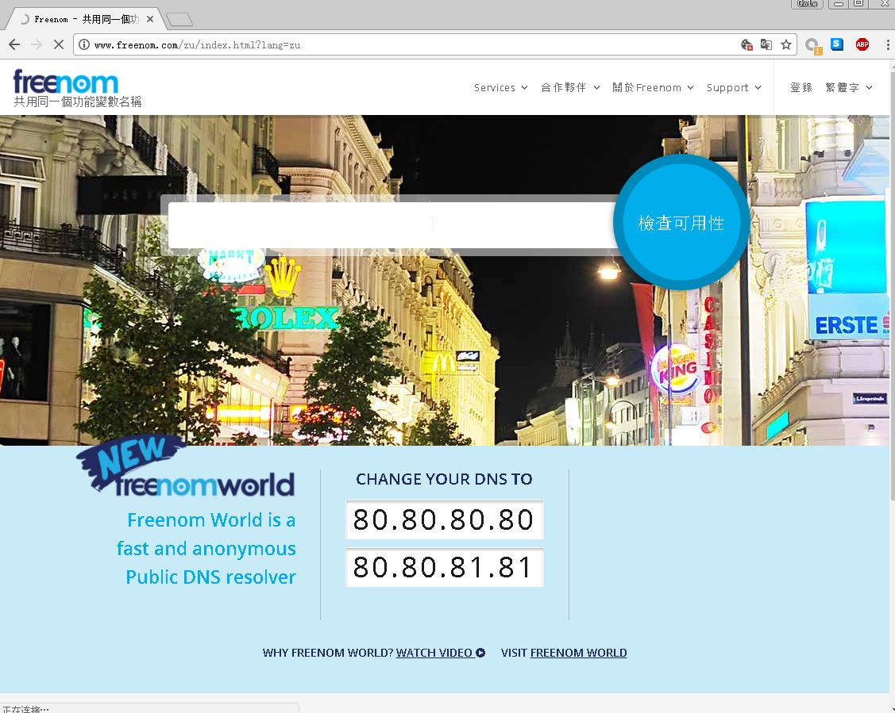
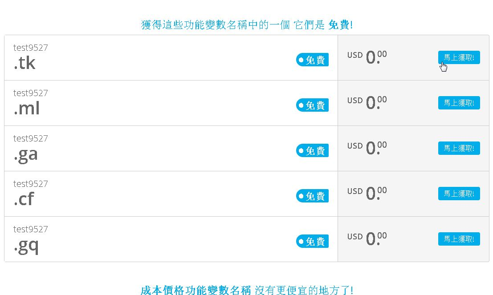
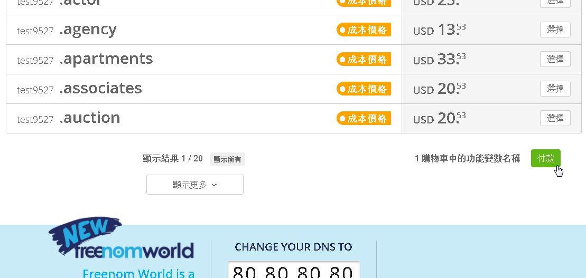
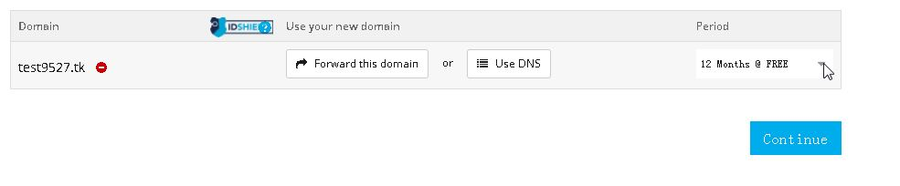
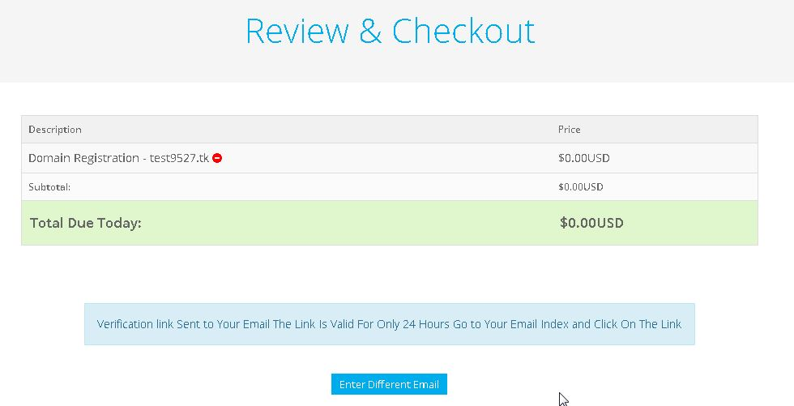
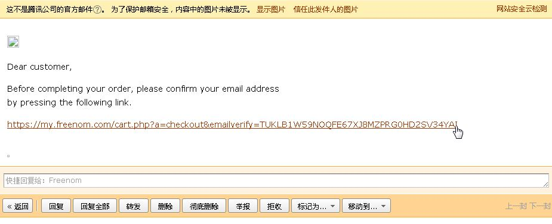
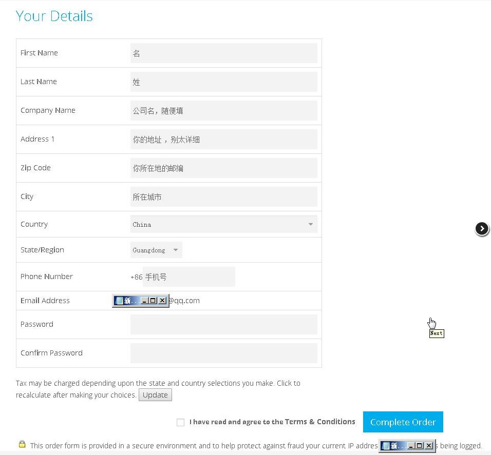
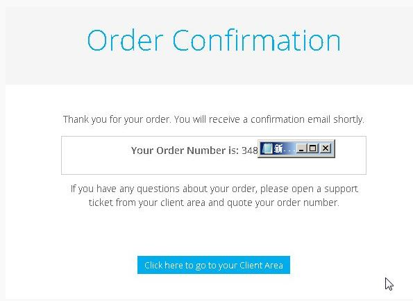
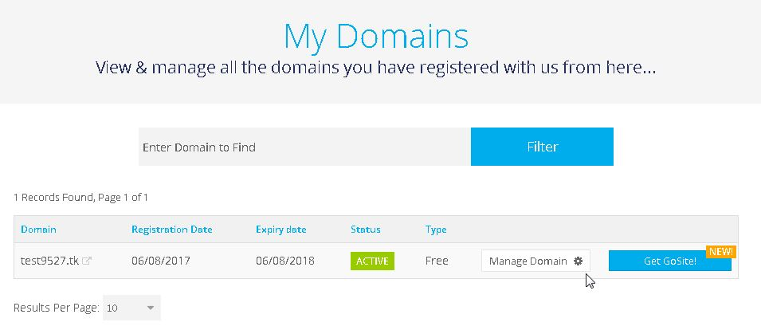

freenom ,域名提供商，官网地址 www.freenom.com
打开官网

输入一个你想要的域名，例如 test9527 检查可用性

显示有5个免费域名可供选择，选择.tk ,其他的几个也可以，点击后面的马上获取
向下滚动网页，会看到有一个绿色的付款按钮，点击

选择12 Months @ FREE ,然后点击Continue

这时就需要注册一个freenom帐号了，在Enter Your Email Address 栏里输入你常用的电子邮箱，然后点击Verity My Email Address
会发送一封验证邮件到你的电子邮箱

登录你的邮箱，打开刚收到的freenom发送来的邮件，里面有个验证链接，点击

此处为填写你的个人信息，别太详细，依次是名，姓，公司名，地址，邮编，所在城市，国家，省份，手机号，下面两空行是设
置确认密码。

填完勾选I have read and agree to the Terms & Conditions 然后点击Complete Order.出现下面页面则表示成功

然后点击上面的 Services - My domains , 登录 ，就可看到刚申请的 test9527 域名了 ！

注意，因为是免费域名，你只有使用权并没有所有权，如果提供商需要可能会被收回，如果不想莫名其妙被收回的话可以考虑购买付费域名，付费域名也不是很贵，免费域名被收回至少我是没碰到，别让它闲置就好！
有域名了，如果你再有一台VPS 即虚拟服务器，就可以搭建网站了